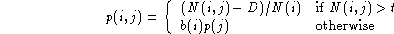
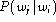

Before continuing with the description of network generation and, in particular, the use of HBUILD , the use of bigram language models needs to be described. Support for statistical language models in HTK is provided by the library module HLM. Although the interface to HLM can support general N-grams , the facilities for constructing and using N-grams are limited to bigrams.
A bigram language model can be built using HLSTATS invoked as follows where it is a assumed that all of the label files used for training are stored in an MLF called labs
HLStats -b bigfn -o -I labs wordlistAll words used in the label files must be listed in the wordlist. This command will read all of the transcriptions in labs, build a table of bigram counts in memory, and then output a back-off bigram to the file bigfn. The formulae used for this are given in the reference entry for HLSTATS. However, the basic idea is encapsulated in the following formula

where N(i,j) is the number of times word j follows word i and N(i) is the number of times that word i appears. Essentially, a small part of the available probability mass is deducted from the higher bigram counts and distributed amongst the infrequent bigrams. This process is called discounting. The default value for the discount constant D is 0.5 but this can be altered using the configuration variable DISCOUNT . When a bigram count falls below the threshold t, the bigram is backed-off to the unigram probability suitably scaled by a back-off weight in order to ensure that all bigram probabilities for a given history sum to one.
Backed-off bigrams are stored in a text file using the standard ARPA MIT-LL format which as used in HTK is as follows
\data\
ngram 1=<num 1-grams>
ngram 2=<num 2-ngrams>
\1-grams:
P(!ENTER) !ENTER B(!ENTER)
P(W1) W1 B(W1)
P(W2) W2 B(W2)
...
P(!EXIT) !EXIT B(!EXIT)
\2-grams:
P(W1 | !ENTER) !ENTER W1
P(W2 | !ENTER) !ENTER W2
P(W1 | W1) W1 W1
P(W2 | W1) W1 W2
P(W1 | W2) W2 W1
....
P(!EXIT | W1) W1 !EXIT
P(!EXIT | W2) W2 !EXIT
\end\
where all probabilities are stored as base-10 logs. The default
start and end words, !ENTER and !EXIT can be changed
using the HLSTATS -s option.
For some applications, a simple matrix style of bigram representation may be more appropriate. If the -o option is omitted in the above invocation of HLSTATS, then a simple full bigram matrix will be output using the format
!ENTER 0 P(W1 | !ENTER) P(W2 | !ENTER) .....
W1 0 P(W1 | W1) P(W2 | W1) .....
W2 0 P(W1 | W2) P(W2 | W2) .....
...
!EXIT 0 PN PN .....
where the probability  is given by row i,j of the matrix.
If there are a total of N words in the vocabulary then PN
in the above is set to 1/(N+1), this ensures that the last row
sums to one. As a very crude form of smoothing, a floor can be set
using the -f minp option to prevent any entry falling
below minp. Note, however, that this does not affect the
bigram entries in the first
column which are zero by definition. Finally, as with the storage
of tied-mixture and discrete probabilities, a run-length encoding
scheme is used whereby any value can be followed by an
asterix and a repeat count (see section 7.5).